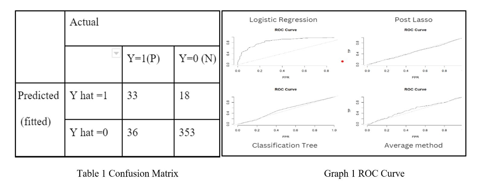
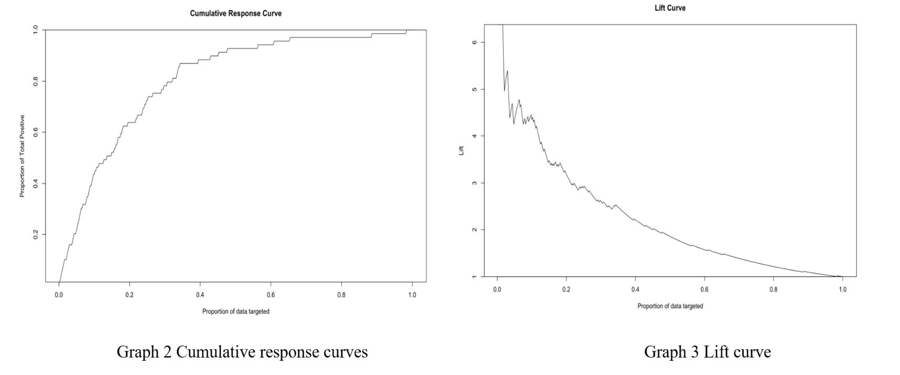

Machine Learning: Predictive Models
As a member of a five-person team, we conducted a study to develop and implement a predictive model aimed at improving company decision-making in hiring new employees and reducing employee turnover. Our study was based on a dataset provided by a large corporation that contained 1,470 observations of current and former employees, including 35 variables such as employee demographics, job-related characteristics, and employment history.
We utilized a number of methods and techniques to preprocess the dataset and identify critical features for employee retention programs. First, we identified and removed any duplicate or irrelevant data. Next, we imputed missing values using the k-Nearest Neighbors (k-NN) algorithm, and scaled the data using the StandardScaler function in Python to ensure that all variables were on the same scale. We then used Principal Component Analysis (PCA) to identify the most important features in predicting employee attrition.
Our study revealed that several key features were critical in predicting employee turnover rates, including marital status, previous employment history, and years of employment. Using these features, we developed a predictive model using logistic regression and post-lasso techniques to identify relevant features from a large set of variables.
We evaluated our model's effectiveness using Receiver Operating Characteristic (ROC) analysis and identified the optimal threshold of 0.5 for our model, which resulted in a true positive rate of 0.47 and a false positive rate of 0.049. We also found that the logistic regression model achieved the highest performance among the four models we evaluated, indicating its effectiveness in predicting employee attrition.
Based on our model's predictions, we identified a potential 19% attrition rate and targeted the top 20% of employees who were most likely to leave the company for intervention with employee welfare programs. We also used cumulative response curves and lift curves to evaluate our model's effectiveness, showing that targeting 20% of employees with our model was 3.5 times more effective than random guessing, which can help reduce attrition and improve retention.
In addition to our model's predictions, our study also identified several ethical issues related to predictive analytics, such as discrimination against candidates with certain labels and unfair treatment of low-risk employees. We recommended that companies should be aware of these issues and strive for fairness in their talent retention strategies.